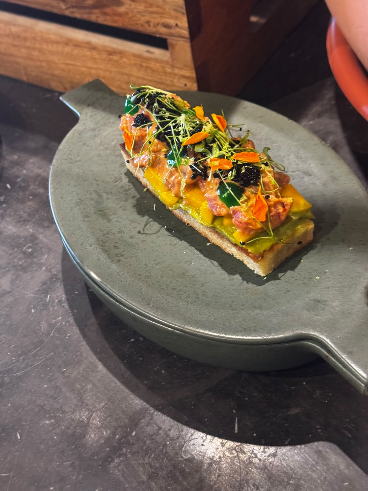

Tuna Toasted
The Chedi · September 7, 2026
- Pan-sear the sliced toast until golden brown and crispy.
- Spread the avocado purée evenly over the toast.
- Grill the tuna and cut it into small dice.
- Mix the grilled tuna with the spicy mayonnaise.
- Place the tuna mixture over the avocado purée.
- Garnish with tobiko.
- Finish with egg yolk gel.
- Serve immediately.

Ingredients
- Sliced Pen Seared Toast 60 g
- Avocado Paste 20 g
- Grilled Tuna Small Dice 120 g
- Spicy Mayo 20 g
- Egg Yolk gel 10 g
- Tobiko Cavira 10 g
Allergen information
Gluten
Fish
Eggs
🥗 Salad
🍽️ Starter
🌶️ Mild
🌿
Garnish: Microgreens, Fresh herbs